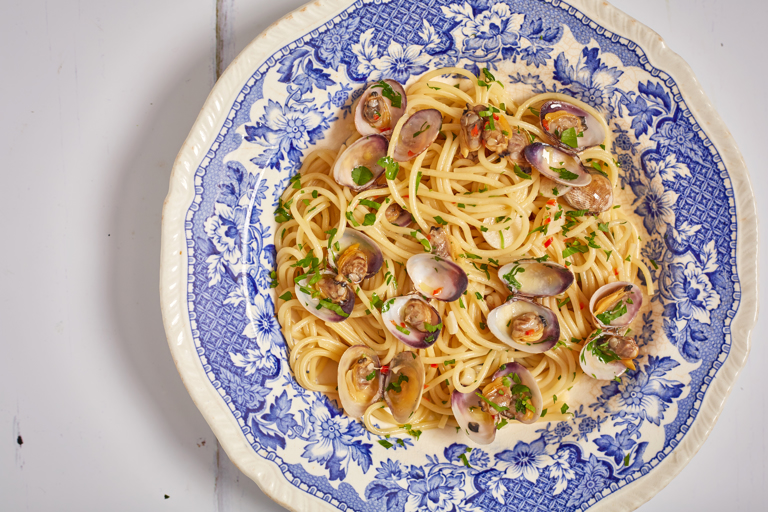

Spaghetti alle Vongele

Description
This light dish makes a perfect midweek supper treat
Ingredients
- 140g spaghetti
- 500g fresh clams in shells
- 2 ripe tomatoes
- 2 garlic clove, chopped
- olive oil
- 1 small fresh red chilli/li>
- splash of white wine
- chopped parsley
- salt and pepper
Steps
- Put the water for the spaghetti on to boil. Rinse the clams
in several changes of cold water. Discard any that are open or damaged.
Cover the tomatoes with boiling water, leave for 1 min, then drain and slip off the skins,
Remove the seeds and chop the flesh.
- Cook spaghetti according to pack instructions. Meanwhile, heat the oil in a large pan,
add the garlic and chilli, then fry gently for a few seconds. Stir in the tomatoes, then
add the clams and a splash of wine, salt and pepper and bring to the boil. Cover the pan
and cook for 3-4 mins, until the clams are open. Drain the pasta, then tip into the pan with
the parsley and toss together. Serve in bowls with bread for mopping up the juices.